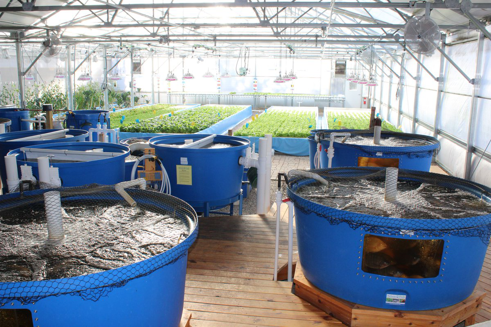
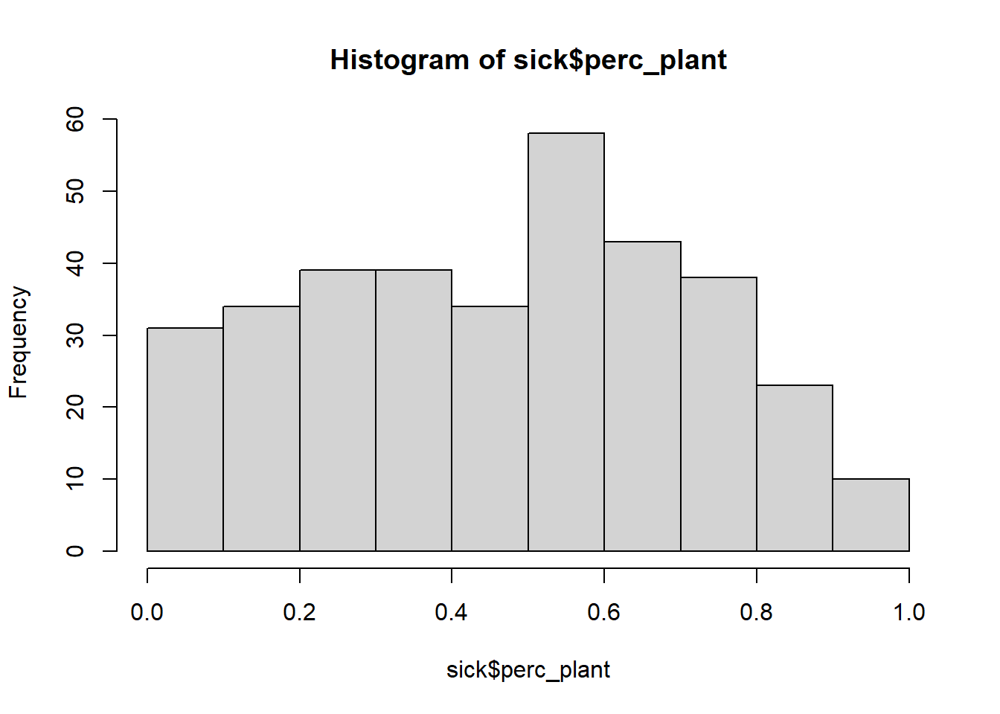
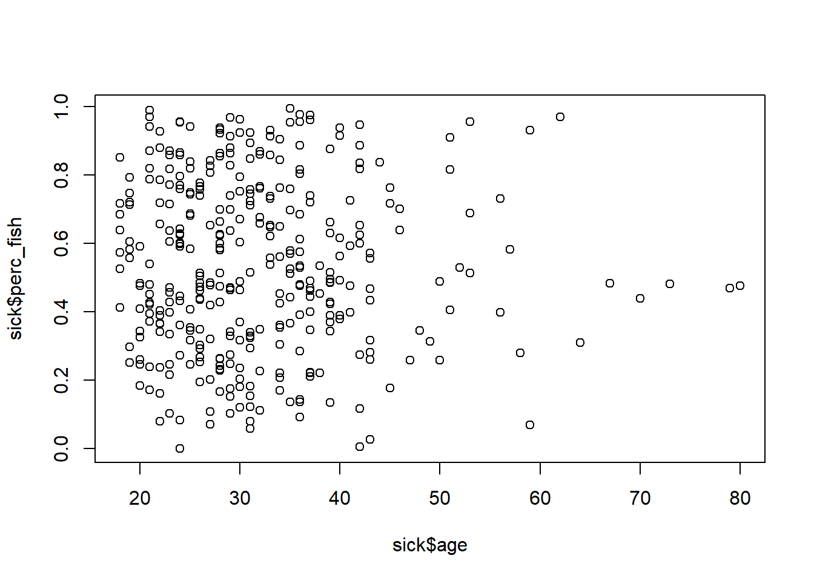
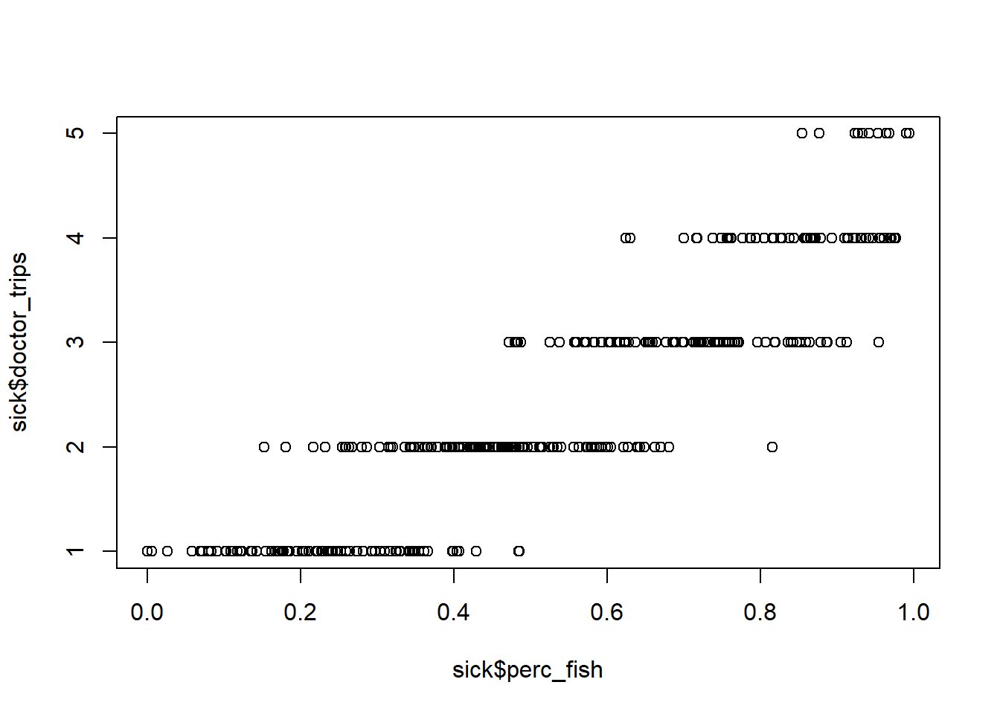

# Open up the library
library(tidyverse)2.1: Introduction to Descriptive Statistics and Data Visualization
Learning Outcomes
- Students will be able to apply basic data science knowledge to find the cause of a real-world scenario–food poisoning!
- Students will be able to generate two types of plots using base R syntax to visualize a single continuous variable (histograms and distributions) and two continuous variables (scatter plots).
- Students will be able to use visual-thinking skills to create visualizations that allow them to explore patterns in data, draw inferences, and create solutions.
Introduction to The Problem

We have a wave of people getting sick across the team. People are coming in complaining of stomach sickness. Doctors have ruled out a communicable viral infection like norovirus, so it seems likely to be a food contamination issue.
The two main sources of food that are grown on site and distributed to team members are plants grown in hydroponic greenhouses (mostly Swiss chard, cucumbers, and radishes) and fish (tilapia — a tolerant warm-water species — and rainbow trout — a cold-water species). The combination of aquaculture and hydroponics is called aquaponics.
Team members’ diets vary in composition; people are allowed to choose how much of different food sources they eat.
Fortunately, we have some data we can use to investigate! We have data on the following:
- Which team members are sick and how many times they’ve gone to the doctor
- Some information about each team member, such as:
- Sex, age, height, occupation
- How much fish and/or plant material they incorporate into their diets
Group Discussion
How might we figure out what is causing the problem? Try to focus on potential solutions that involve the data we already have (listed above).
Spend 5 minutes brainstorming in your groups how you might figure out whether plants or fish are the culprits? Be ready to report out.
Descriptive Statistics and Data Visualization
In order to begin addressing the question of what might be causing illness in our crew (and lots of other questions!), we often want to start with descriptive statistics and data visualization.
In this course, we will be working with two types of statistics: descriptive and inferential.
- Descriptive statistics — also called summary statistics — are ways of presenting, organizing, and summarizing data. Data visualization is often associated with descriptive statistics
- Inferential statistics help us draw reasonable conclusions about a population based on the data we observed in a sample.
In Module 2, we will be focusing exclusively on descriptive statistics and data visualization techniques.
As a quick overview, descriptive statistics often include 3 elements:
- Distribution of the data
- Measures of central tendency: mean, median, and mode
- Measures of variation: range and standard deviation
The slide deck with more information about descriptive statistics is linked here.
For a nice overview of descriptive statistics, check out this website I showed in class. It goes a bit further than we go in this class, but it is a nice place to review!
The Data
First we’re going to pull in the data and give it a quick inspection/exploration before we start.
As usual, we start by calling the tidyverse.
To bring our data into R, we use a function called read_csv(). CSV (comma-separated values) are efficient ways to save 2-dimensional (“spreadsheet”) data.
# Put data in Environment
sick <- read_csv("data/sick_data.csv")
# View first few rows
head(sick)# A tibble: 6 × 10
last first sex age height_cm weight_kg specialties perc_fish perc_plant
<chr> <chr> <chr> <dbl> <dbl> <dbl> <chr> <dbl> <dbl>
1 Gonzal… Ange… M 35 169. 51.4 Hydrology 0.994 0.00620
2 Navrat… John M 19 112. 96.3 Genetics 0.297 0.703
3 Duff Josh… M 26 133. 52.1 Horticultu… 0.514 0.486
4 Dottson Juli… M 36 140. 52.6 Climatology 0.686 0.314
5 al-Sul… Mune… M 26 194. 52.2 Geology 0.292 0.708
6 Galleg… Rich… M 29 153. 98.1 Climatology 0.329 0.671
# ℹ 1 more variable: doctor_trips <dbl>How many observations (rows) do we have? How about variables (columns)?
Which variables are we particularly interested in? Are they continuous or categorical? Does it matter?
Let’s Practice
Now that we have a more formalized understanding of measures of central tendency and measures of variation, let’s put them into use to learn a little bit more about our data. In small groups, calculate the mean (mean()) and standard deviation (sd()) for the percent fish in our sick crew’s diets.
# Find mean and standard deviation of %fish in people's diets
sick %>%
summarize(mean_fish = mean(perc_fish),
sd_fish = sd(perc_fish))# A tibble: 1 × 2
mean_fish sd_fish
<dbl> <dbl>
1 0.534 0.250Data Visualization in R
Combining data visualization with descriptive statistics is a great way to understand our data!
There are two main ways to make data visualizations in R: through base R, which is the syntax we learned in our first week of coding, and through ggplot2, which is a package in the tidyverse.
For the majority of the semester, we will be plotting in with ggplot2, which is a fun and powerful tool. However, to plot even a simple plot, ggplot2 takes some explanation. We will talk about ggplot2 in our next class but for today, let’s first make some quick-and-dirty plots in base R.
Histograms
We’ve calculated some descriptive statistics about the percents of fish and plants in our sick crew members’ diets, but it didn’t tell us too much. Let’s try some data visualization to see if that gives us any additional information.
# Histogram in base R
hist(sick$perc_plant)
Group Discussion
Discuss this histogram with your group members. Some questions to consider:
- What is a histogram?
- What does a histogram tell us?
- What does each axis mean? (x-axis is horizontal, y-axis is vertical)
- What, if any, conclusions can we draw from this histogram in regards to the percent plants in diets and sickness?
- How can we improve this visualization?
Take about 5 minutes. Be ready to report out.
Group Brainstorm
We’ve covered one type of visualization that just shows one variable…but what we’re really interested in is figuring out if fish or plants are the culprit in food poisoning. Spend about 5 minutes in your groups sketching out a visualization that might give us insight into this.
Scatter plots
Scatter plots allow us to visualize the relationship between two continuous (or numeric) variables. For example, we can use a scatter plot to see if there is a relationship between how old a crew member is and how much fish is in their diet.
# Scatter plot in base R
plot(x = sick$age, y = sick$perc_fish)
This isn’t super informative, because there isn’t really a relationship between a person’s age and the amount of fish they consume. At least not in this sample.
Building and Interpreting
In your group, create a scatter plot to determine whether there is a correlation between the percentage of fish eaten and the number of trips to the doctor in the past 6 months.
# Another scatterplot in base R
plot(x = sick$perc_fish, y = sick$doctor_trips)
How do we interpret this plot?